救護實踐
Ambulance Practices
將所學知識運用實踐，展現專業，藉由服務他人獲得自我成長。積極與校內單位及社團密切合作，並鏈結校內救護機構、國高中、小學及消防分隊等，提供個人化急救教育訓練，實踐急救技能，持續傳遞正能量，讓急救意識成為一種生活態度，期待未來在急救教育領域持續成長，發揮更大影響力。


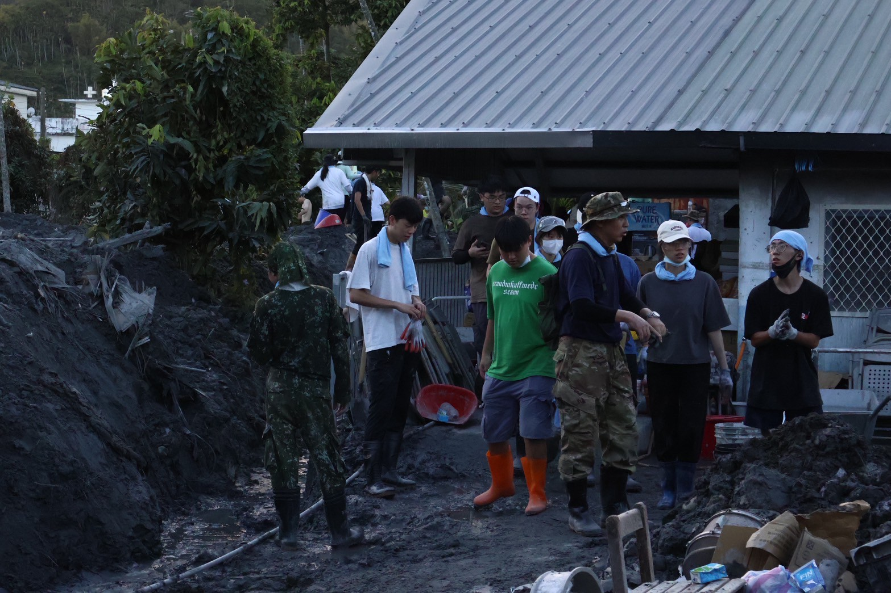
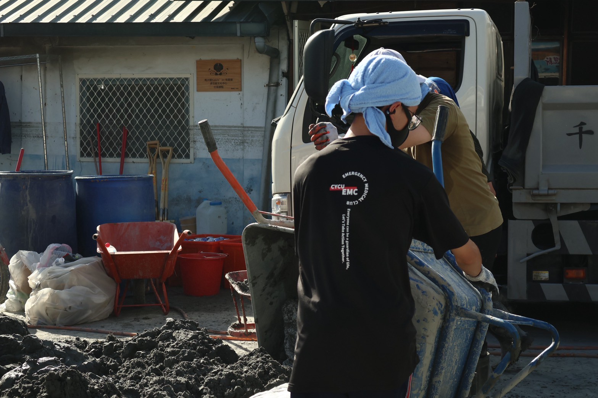
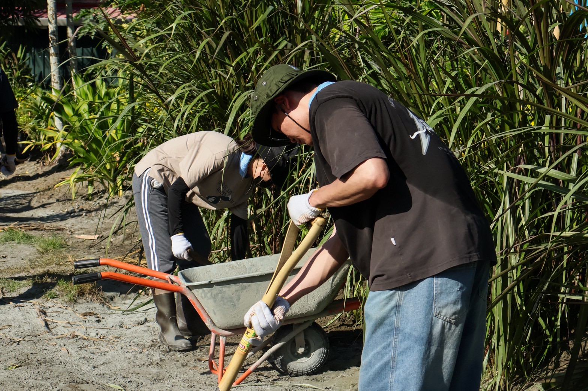
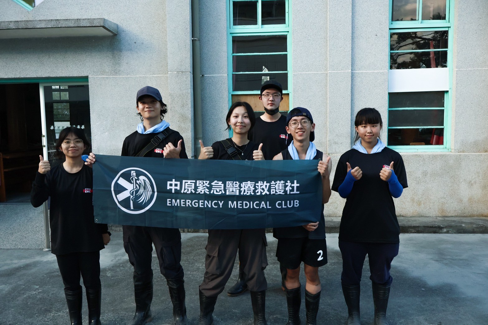
花蓮光復鄉馬太鞍村救護志工行動紀錄
懷抱著急救人的使命感與對土地的深切關懷，投身於花蓮光復鄉馬太鞍村災害援助行動，致力於為當地居民提供最即時的後勤支援與醫療輔助。活動期間，運用平時所學的急救技能、應變知識以及團隊協作能力，協助現場進行環境復原、物資調度或基礎傷患關懷，展現「人溺己溺」的同理心。我們相信，急救的價值不僅在於技術的施展，更在於關鍵時刻挺身而出，陪伴受災民眾共度難關的那份溫暖。透過實際走入現場，我們期許能貢獻一份微薄但堅定的力量，協助家園早日重回正軌，同時讓社員深刻體會生命的韌性與服務的真諦，真正落實學以致用的目標。
元旦升旗跨夜隨隊救護
打破課本上的死板知識，我們將模擬真實事故現場。考驗學員在壓力下如何正確判斷傷情，並與團隊成員高效協作，完成初步救護任務。
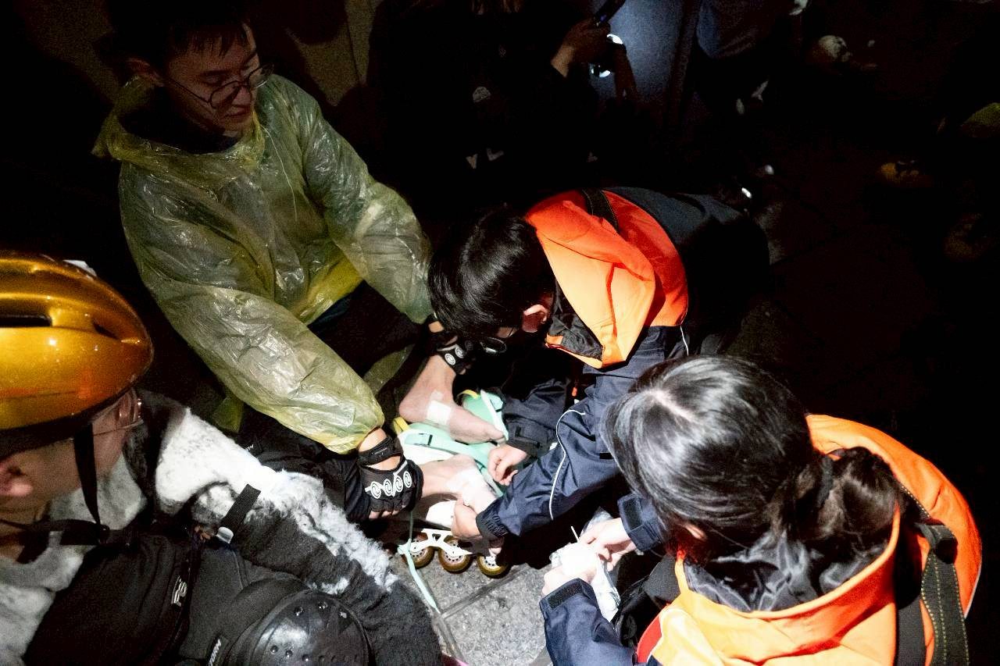
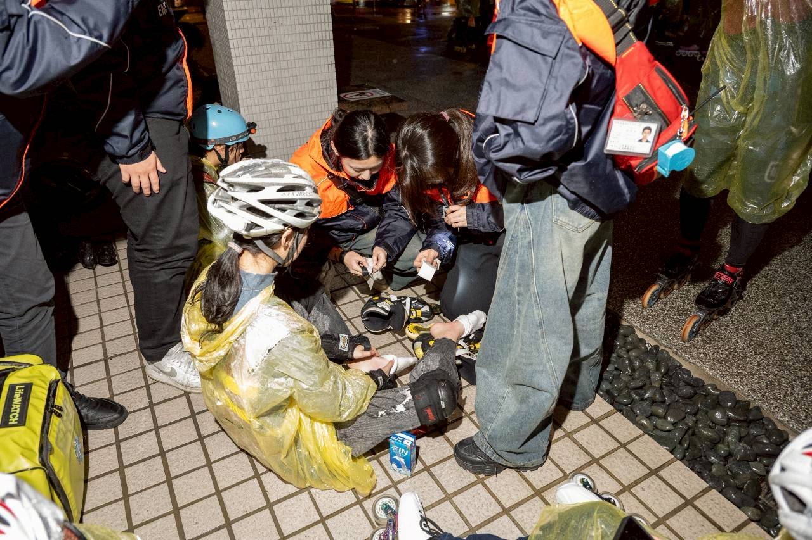
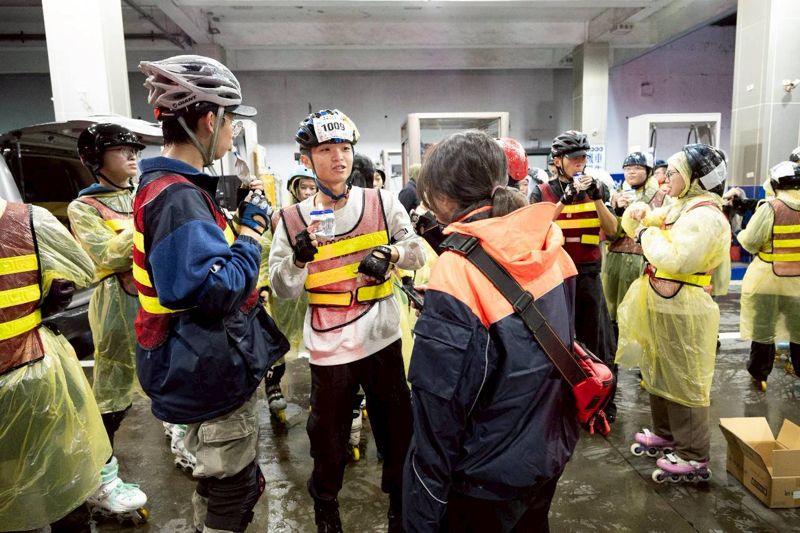
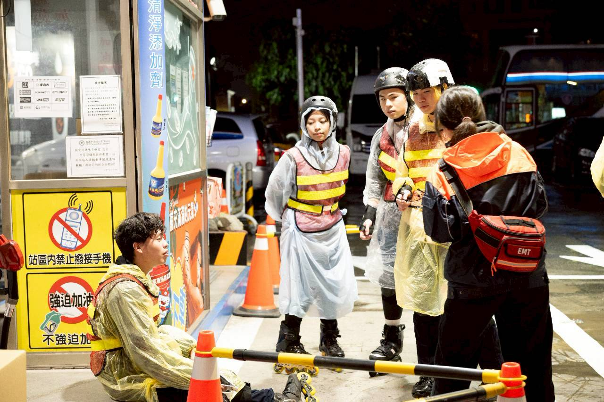
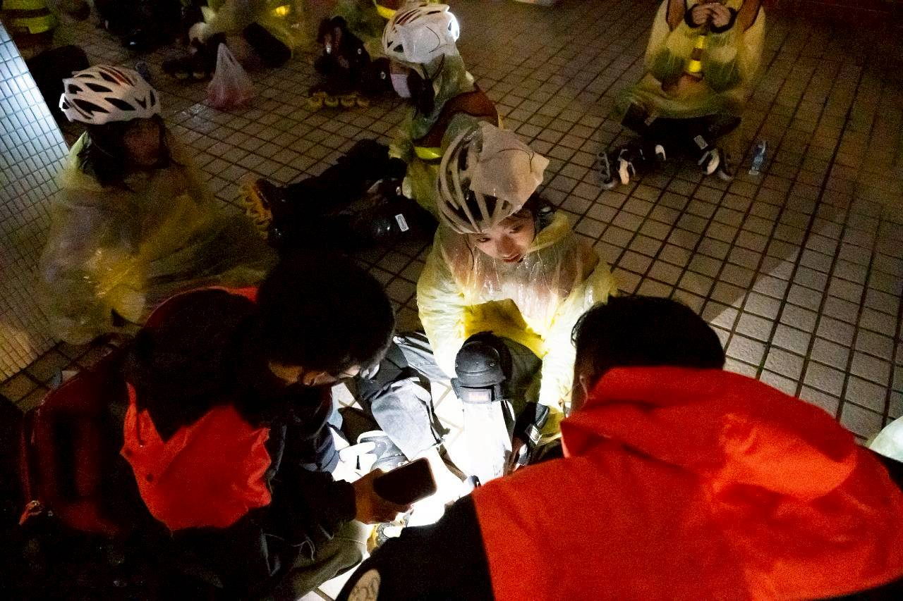
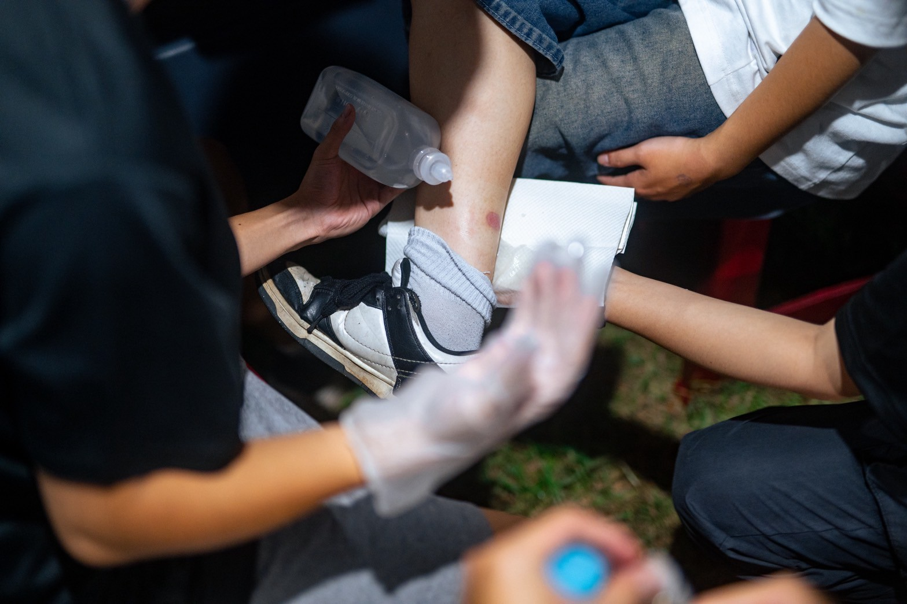
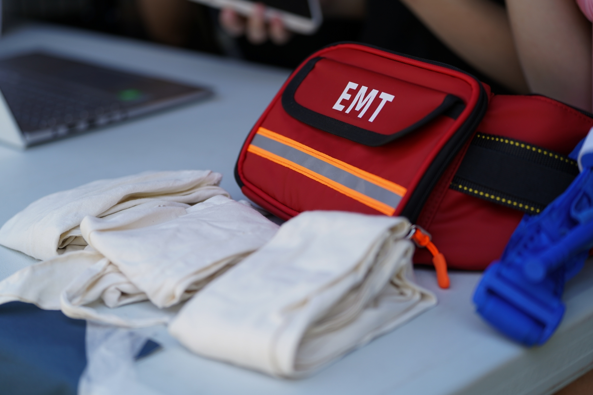
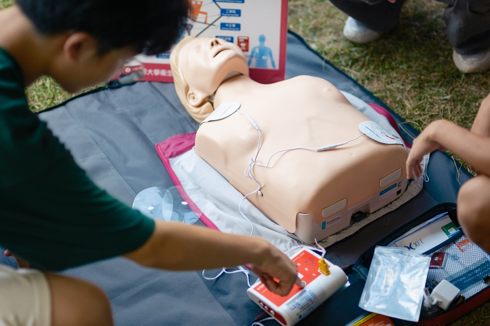
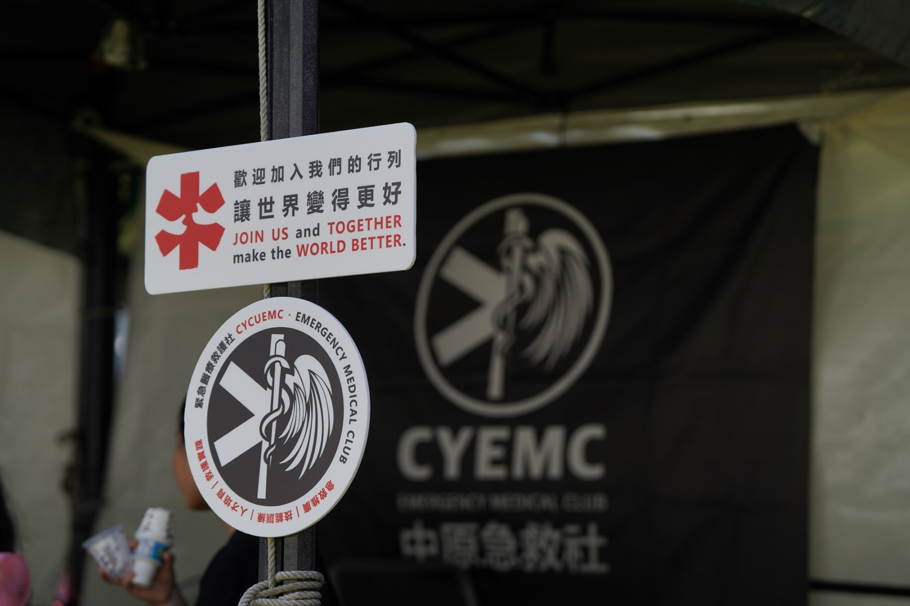
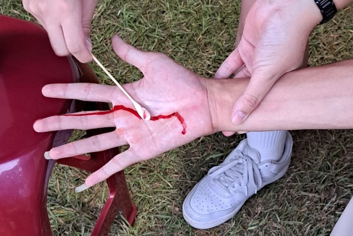
社團博覽會暨活動醫療站支援
透過資深醫師的分享，深入了解急診室的日常挑戰。從檢傷分類到緊急救護，每一秒都是關鍵決策。帶領學員建立正確的醫療交接邏輯。
大、小運會救護志工
打破課本上的死板知識，我們將模擬真實事故現場。考驗學員在壓力下如何正確判斷傷情，並與團隊成員高效協作，完成初步救護任務。
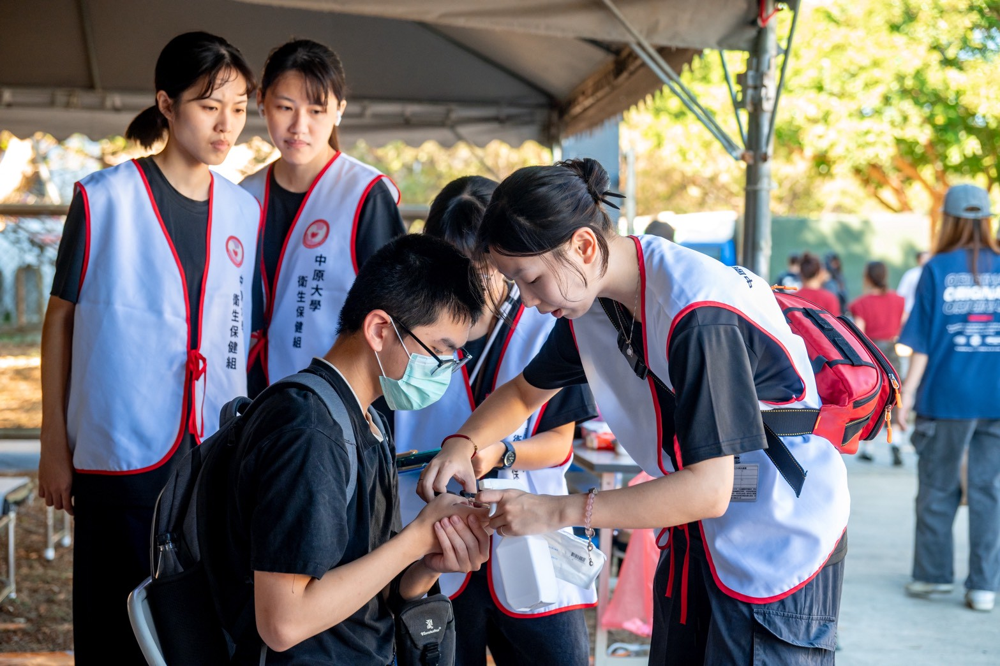